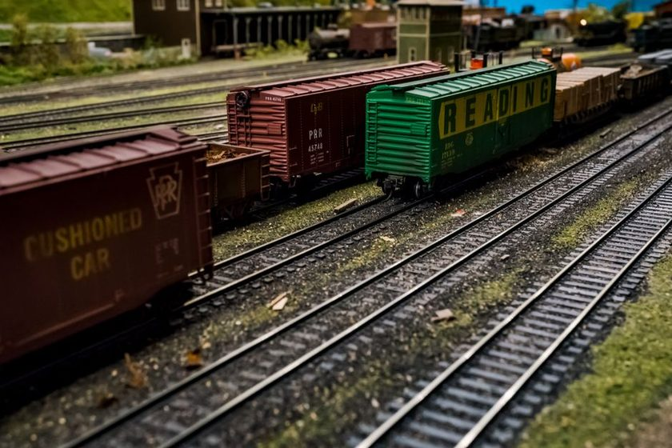

Layout Design · March 22, 2026
An Honest Look at the Fiddle Yard
The fiddle yard never appears in the photographs, yet it decides how much of the layout actually gets to run in a session.

Every published photograph of a home layout ends at the scenic break. A backdrop, a tunnel mouth, a run of trees planted just tall enough to hide what's behind them — and past that line sits the part of the layout doing more work than anything the camera sees. The fiddle yard has no scenery, usually no proper flooring, and often not even a name written on the baseboard plan. Treat it as an afterthought and the handsome few feet of railway out front will spend most of a session waiting on it.
The room behind the backdrop
A fiddle yard is where trains go when they're not currently "on stage." It's the mechanism that lets one headboard become another, lets a six-coach train become a seven-wagon goods, and lets a small layout imply a railway that continues somewhere off the edge of the baseboard. None of that shows up in a photo, but all of it shows up in a session. What looks like storage space is, in practical terms, the layout's working capacity — and capacity is the thing that determines whether an evening at the controls feels busy or feels like waiting for the kettle.
Counting the roads that actually matter
The number of parallel roads in the fiddle yard sets a hard ceiling on how many trains can be in play at once. Two roads means two trains, full stop, for the length of the session — there's nowhere for a third to wait, so every move has to resolve before the next one can start. Three or four roads let a session breathe: one train arriving, one departing, one held in reserve for later in the timetable. It's a similar arithmetic to the one covered in our piece on minimum radius — a number that looks abstract on paper turns out to govern almost everything that happens once track is actually being operated.
A fiddle yard with one road too few doesn't feel like a small layout — it feels like a broken one, because the operator runs out of places to put things before the session runs out of time.
Cassettes and the cost of handling
Cassette systems — lengths of track carried on a removable tray or shelf — let a yard hold far more stock than its footprint would otherwise allow, since trains can be built up off-scene and swapped in complete rather than shunted road to road. That solves a real space problem in a small room. What it doesn't solve, and sometimes worsens, is the operator's attention: every cassette change is a manual step, a moment where the running stops so a tray can be lifted, aligned and coupled up. In a session with a slow, deliberate timetable that pause barely registers. In a session built around frequent, quick moves, it becomes the bottleneck the whole layout was trying to avoid.
| Yard type | Typical roads | What a session can do | Where it falls down |
|---|---|---|---|
| Single reversing loop | 1 | One train, sent out and brought back | No reserve — the session stalls waiting on itself |
| Simple stub yard | 2–3 | Two or three trains staged in turn | Tight on longer trains; little slack for out-and-back working |
| Cassette-fed stub yard | 2–3 roads + cassettes | Trains built off-scene, swapped in whole | Adds a manual handling step to every changeover |
| Sector-plate yard | 3–5, sharing one throat | Good road count for the width it occupies | Alignment has to be exact, or couplings won't meet |
| Full traverser | 4–6 | Highest realistic capacity for the depth it needs | Wants the most baseboard depth of any option here |
Sizing the yard to the session, not the baseboard
The common mistake is drawing the fiddle yard last, as whatever shape is left over once the scenic section has taken the space it wanted. That order gets it backwards. The yard should be sized against the session you actually intend to run — the same discipline described in our piece on the siding that earns its space, where a feature justifies itself by the job it does rather than by the gap it fills. A few questions are worth answering honestly before the baseboard is cut:
- How many trains do you want visible or "in service" at the peak of a session?
- Will cassette handling fit the pace of the timetable, or fight it?
- Does the yard need to double as storage between sessions, not just during one?
- Is there enough length on each road for the longest train the plan is meant to run?
Field note
Yards sized to exactly match peak demand tend to feel comfortable in the first session and tight by the third, once an extra wagon or a held-back train enters the picture. One spare road beyond the number a session strictly requires is a small cost in space that buys a noticeable amount of slack in practice.
What this means for the plan you're drawing
The fiddle yard is unglamorous by design — it isn't meant to be looked at, only used. But because it isn't scenic, it's easy to under-plan, and because it's under the layout's floor of attention, mistakes there don't show up until a session is already in progress and running out of places to put a train. Give it the same deliberate thought as the scenic section, and the part nobody photographs quietly becomes the part that makes everything else work.
A note on scope
This piece describes trade-offs we've observed in fiddle yard design, not a formula to follow. Room shapes, stock lengths and the pace a given operator enjoys all vary, and the right yard for one layout may be the wrong yard for another built to the same track plan.